Protótipo¶
Esta página apresenta o porquê das funcionalidades do protótipo e quais são os requisitos aplicados a essas finalidades.
Área do aprendiz¶
Login¶
Essa é a tela de Login. Nessa tela, o usuário que já for cadastrado poderá ser autenticado por meio do uso de um email e senha de preferência, atendendo ao RF25.
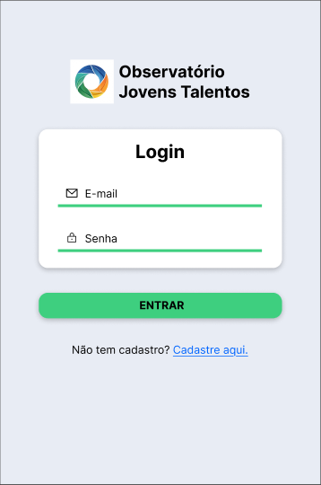
Cadastro¶
Caso o usuário não tenha cadastro, ele poderá se cadastrar utilizando um email, nome e uma senha de preferência, atendendo ao RF23.
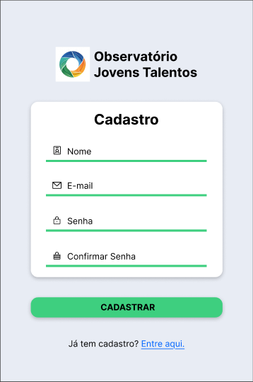
Aba Início¶
Após o usuário acessar sua conta, ele será levado para a tela Início, que terá suas informações principais, como a barra de experiência (RF10), a frequência (RF02), as atividades, as conquistas, um botão para realizar o check-in do dia (RF01) e uma caixa de notificações (RF17).
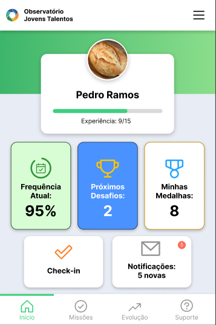
Ao pressionar o Menu no canto superior direito da tela, surge uma barra lateral do lado direito contendo botões para gerenciar o perfil (RF24), redefinir a senha, sair da conta e acessar os termos de uso e políticas de privacidade.
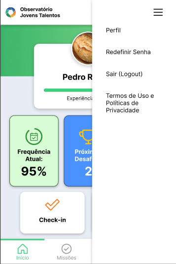
Aba Missões¶
Passando para a aba de missões, podemos ver todas as nossas missões pendentes (RF07). Essas missões possuem informações como título, data de entrega, quantidade de experiência que será ganha ao concluir essa missão e a recompensa por concluir essa missão.
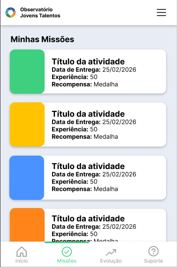
Ao pressionar uma missão, uma descrição aparece abaixo dela explicando o que deve ser feito exatamente e, logo abaixo, há um botão para marcar a missão como concluída (RF08).
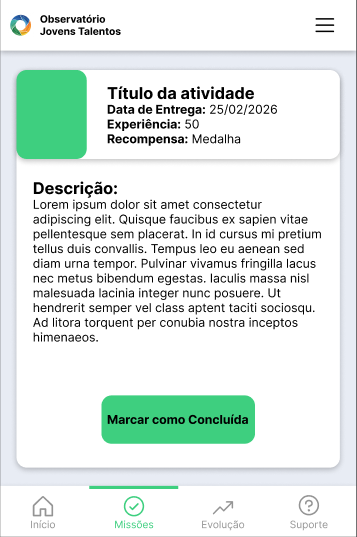
Aba Evolução¶
Está é a aba de evolução, ela existe para cumprir os requisitos RF10 (Consultar conquistas e evolução) e RF20 (Consultar painel de indicadores educacionais). Indo mais a fundo também encontramos os requisitos RF03 (Calcular indicadores de assiduidade) e RF11 (Gerar indicadores de engajamento).
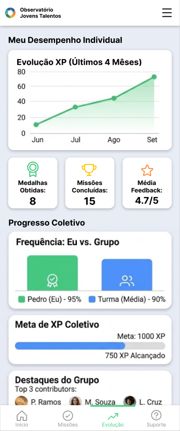
Aba Suporte¶
Por fim, temos a aba de suporte, que é onde tem as dúvidas mais frequentes sobre a plataforma (RF28), um botão para que o aprendiz relate problemas aos superiores (RF12) e um botão para dar feedback sobre a plataforma.
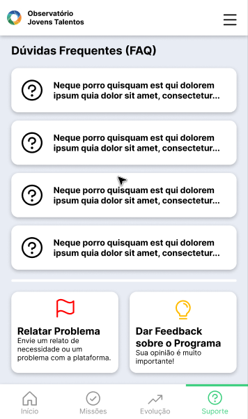
Ao apertar em uma dúvida, ela é expandida e uma resposta aparece.
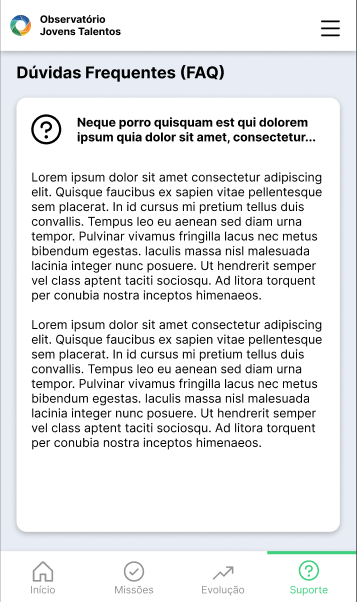
Ao apertar o botão de relatar um problema, o usuário é redirecionado para outra tela na qual ele poderá dizer se o problema está sendo causado pela plataforma, por um instrutor/coordenador ou outro (RF14) e poderá dar uma descrição sobre o problema e enviar o relato de forma anônima ou não.
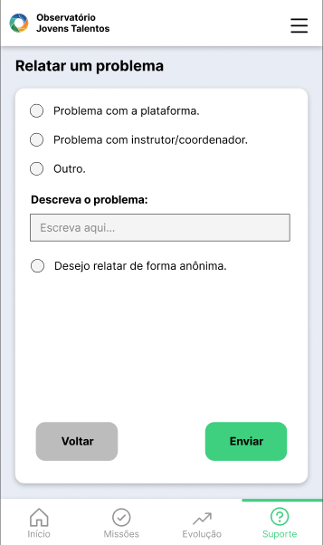
Área do Instrutor/Coordenador¶
Aba Visão Geral (Dashboard)¶
Após o coordenador acessar sua conta e ser autenticado na plataforma (RF25), ele será levado para a tela Visão Geral (Dashboard), que atuará como seu painel principal para consultar indicadores educacionais (RF20). Nela, ele tem acesso a informações consolidadas pelo sistema em tempo real, como os indicadores de assiduidade (RF03) representados no gráfico de evolução coletiva, e os indicadores de engajamento baseados no total de aprendizes ativos (RF11). A tela também possui um alerta visual destacando alunos em que o sistema conseguiu identificar padrões de risco de evasão (RF04), além de um resumo consultivo rápido das atividades atribuídas que aguardam correção (RF07).
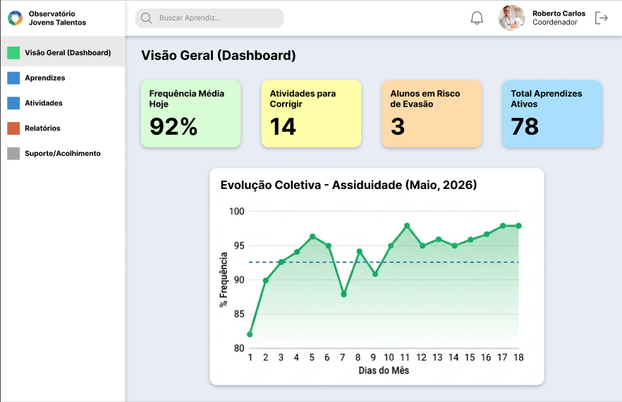
Aba Aprendizes¶
Passando para a aba Aprendizes, podemos ver a listagem de todos os jovens vinculados a turmas e estágios de aprendizagem (RF27). A tabela apresenta dados como o último check-in e a porcentagem de presença, permitindo consultar o histórico de frequência (RF02), além do XP acumulado para consultar as conquistas e evolução de cada aluno (RF10). Na coluna de status, a interface volta a identificar os padrões de risco de evasão de forma individual (RF04). Através dos botões de ação na lateral da tabela, o coordenador pode gerenciar o perfil do usuário (RF24), registrar ações de intervenção pedagógica (RF05) ao analisar um aluno em risco, ou acessar o perfil para registrar a avaliação de desempenho 360 graus (RF18).
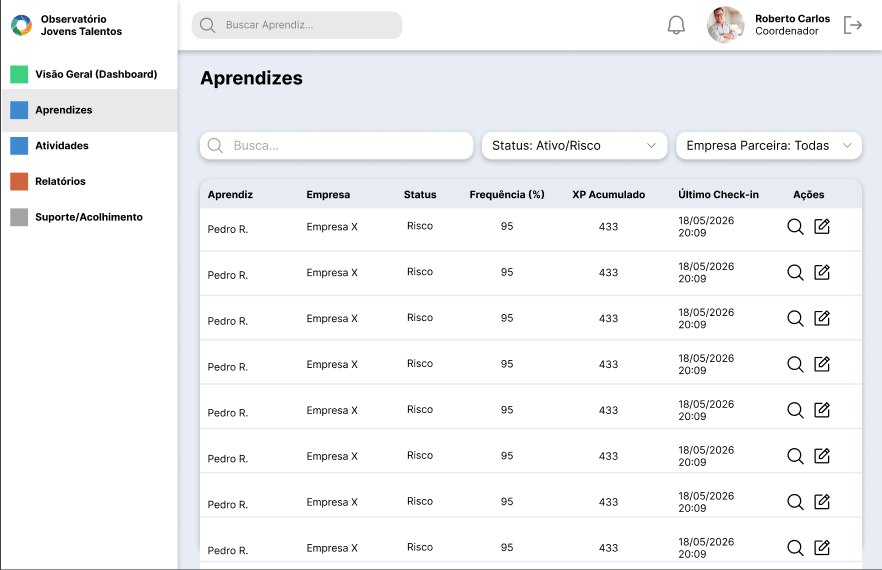
Aba Atividades¶
Ao acessar a aba de Atividades, visualizamos um quadro Kanban focado em consultar os desafios e atividades atribuídas (RF07). Os cards mostram informações vitais, como a dificuldade e o XP para a evolução do aprendiz (RF10). Quando o aluno registra a entrega da atividade em sua ponta (RF08), o card é movido para a coluna "Enviadas", permitindo que o coordenador possa avaliar as entregas de desafios e atividades (RF09). No canto superior, existe o botão para iniciar a inclusão de uma nova demanda.
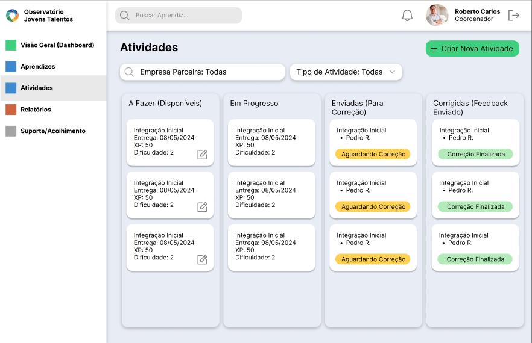
Ao pressionar o botão verde na tela de atividades, surge a interface Criar Atividade. Nela, o coordenador preenche um formulário estruturado para cadastrar desafios e atividades formativas (RF06). Durante esse cadastro, ele estipula a data de entrega, a recompensa e os pontos de XP (RF10), além de implicitamente selecionar as turmas cadastradas ativas que receberão a missão (RF26) - NÃO ADICIONADO AINDA.
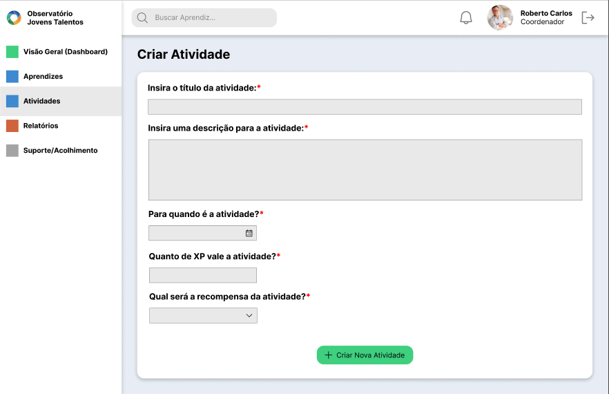
Aba Relatórios¶
Passando para a aba de Relatórios, o coordenador tem à disposição uma interface com campos de busca específicos (Período, Turma, Aprendiz) projetada para gerar os relatórios educacionais (RF21). Ajustando os filtros, ele também consegue gerar o relatório de avaliação 360 graus (RF19) ou consolidar dados para consultar o histórico de frequência em um intervalo de tempo exato (RF02). Uma vez que o documento é gerado em tela, o sistema fornece opções para exportar os relatórios educacionais gerenciais em formatos externos (RF22).
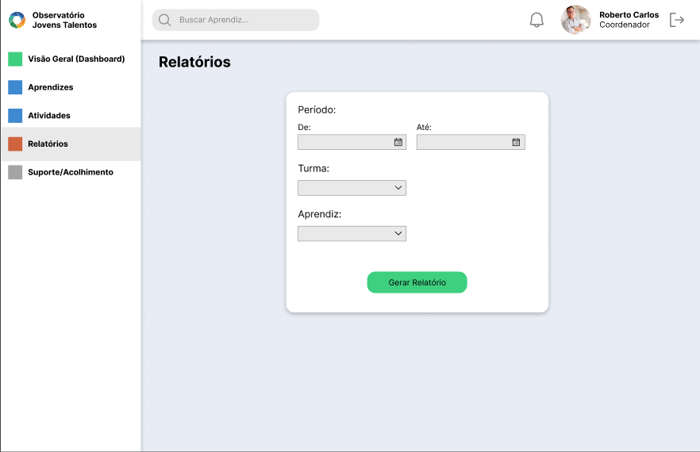
Aba Suporte/Acolhimento¶
Está é a aba de Suporte e Acolhimento, e ela existe principalmente para cumprir o requisito de consultar relatos recebidos (RF13), exibindo no quadro as mensagens e os feedbacks de rotina que os jovens registram (RF12). Nessa interface, ao pressionar o botão "Ver Detalhes", o coordenador consegue categorizar os relatos do aprendiz (RF14) e consultar o histórico de mensagens do canal direto (RF16). Ao pressionar o botão "Responder", ele pode enviar uma mensagem instantânea em canal de comunicação direto (RF15). A leitura contínua destes relatos permite identificar padrões de risco de evasão baseados no comportamento (RF04) e é o gatilho principal para registrar ações de intervenção pedagógica (RF05). Além disso, esta tela central atua como o ambiente lógico para publicar comunicados institucionais gerais (RF17).
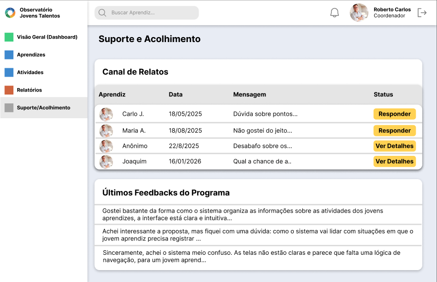
Histórico de versões¶
| Versão | Data | Descrição |
|---|---|---|
| 1.0 | 18/05 | Versão inicial do documento |